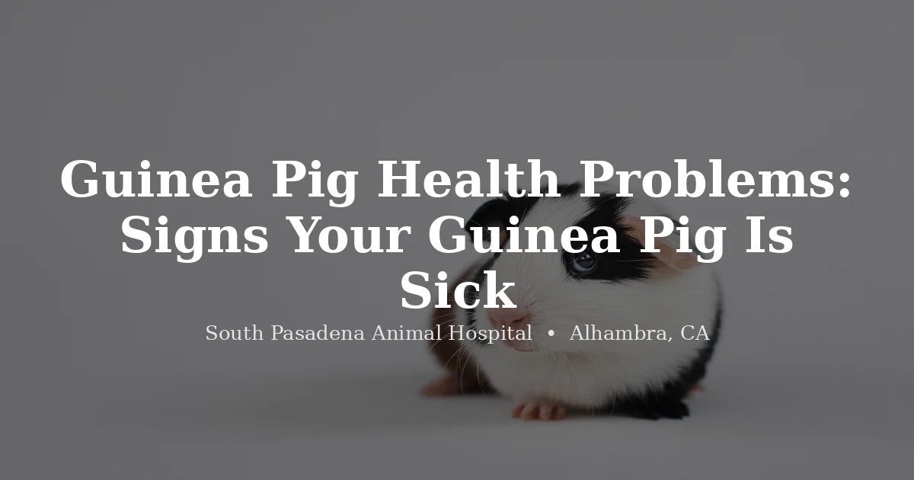

June 3, 2026 · 8 min read
Guinea Pig Health Problems: What to Watch For and When It's Time to Call a Vet

Guinea pigs are sociable, expressive animals — and for most of their owners, deeply beloved. They squeak when they hear the refrigerator open. They popcorn when they're happy. They have personalities. They are also, in our experience, among the most commonly undertreated small pets, because the signs that something is wrong are easy to miss until the problem is already serious.
We see this regularly in our clinic. An owner brings in a guinea pig that's been "a little quiet" for a few days. On examination we find significant weight loss, back molar spurs that have been cutting into the tongue for weeks, or a respiratory infection that's already moving toward pneumonia. Guinea pigs are prey animals. They suppress visible signs of illness by instinct, because in the wild a sick animal attracts predators. By the time your pig is obviously unwell, the underlying problem has often been building for longer than you'd expect.
This guide covers the most common guinea pig health problems, what signs actually mean something, and which situations call for a same-day appointment rather than a wait-and-see approach. We also cover the husbandry basics that prevent most of these problems in the first place. If you're looking for an exotic vet in the Alhambra area, we see guinea pigs at South Pasadena Animal Hospital.
The Most Common Guinea Pig Health Problems
Why we treat any guinea pig sneeze with suspicion
Upper respiratory infections are one of the most common emergencies we see in exotic small mammals — and in guinea pigs, they carry a particular urgency. Guinea pigs are obligate nasal breathers. Unlike a dog or cat, a guinea pig cannot simply open its mouth to breathe when its nasal passages are compromised. When the airway is blocked or inflamed, there is no backup system.
The bacteria most often responsible are Bordetella bronchiseptica and Streptococcus species. Signs include sneezing — particularly persistent or productive sneezing — nasal discharge that may be clear or cloudy, watery or crusty eyes, lethargy, a hunched posture, and labored or audible breathing. A guinea pig that is stretching its neck to breathe or making clicking sounds when it inhales is in serious respiratory distress.
Respiratory infections in guinea pigs can progress to pneumonia within days. Do not take a wait-and-see approach with URI symptoms. A pig that was sneezing yesterday and seems worse today needs to be seen today, not at the end of the week.
Any breathing difficulty in a guinea pig is urgent. They cannot breathe through their mouths. Labored breathing, open-mouth breathing, or obvious respiratory distress warrants a same-day call to a vet. Call (626) 441-1314 for an appointment.
Treatment depends on severity and causative organism but typically involves antibiotics, supportive care, and in more advanced cases nebulization therapy. Early treatment makes a significant difference in outcomes. It also helps to keep your guinea pig away from other guinea pigs during recovery and to review husbandry — drafts, temperature fluctuations, and dusty bedding all increase URI risk.
The deficiency that owners mistake for a calm personality
This is one of the most preventable guinea pig health problems and one of the most commonly missed. Guinea pigs, like humans, cannot synthesize their own vitamin C. They must get it through diet every single day. When they don't, the consequences are slow to appear but ultimately serious.
Clinical signs of scurvy include a rough or dull coat, gradual weight loss, reluctance to move or apparent stiffness, swollen and painful joints, bleeding or ulcerated gums, and slow wound healing. The behavioral change — a pig that used to run to the cage door but now just sits in the corner — is often the first thing owners notice. It gets written off as the guinea pig being "lazy" or "calm." In reality, the animal is in pain.
The recommended daily intake is 25–50 mg of vitamin C. Fresh bell pepper is one of the most reliable and practical sources — a one-inch strip of red bell pepper contains enough vitamin C to cover daily needs. Other good sources include leafy greens like romaine lettuce, parsley, and cilantro.
Do not rely on pellets as your primary vitamin C source. Vitamin C degrades rapidly once pellets are milled, packaged, and exposed to air and light. By the time the bag reaches your home, the vitamin C content may be a fraction of what the label states. Fresh vegetables are the only dependable daily source. Water-based liquid supplements are also unreliable for similar reasons.
A guinea pig with active scurvy needs veterinary treatment — supportive care, vitamin C supplementation at therapeutic doses, and pain management for joint involvement. Recovery takes time. Prevention is far simpler than treatment.
The teeth problem you can't actually see
Dental problems are the second most common reason guinea pigs end up on our exam table. The tricky part: you almost certainly cannot see the problem at home. When people think of guinea pig teeth, they think of the incisors at the front of the mouth — the visible ones. But molar malocclusion, by far the most common dental issue in guinea pigs, affects the cheek teeth in the back, which are not visible without specialized equipment and sedation.
Guinea pigs' teeth grow continuously throughout their lives. Normal occlusion — proper tooth alignment and wear — depends on adequate hay consumption. A guinea pig that isn't eating enough long-fiber hay (and most aren't) is at elevated risk for molar overgrowth. Over time, the back molars develop sharp spurs on their edges that cut into the tongue and cheeks, and in advanced cases the molars form bridges that trap the tongue entirely.
The signs are indirect: drooling or a persistently wet chin, weight loss despite appearing interested in food, dropping food from the mouth rather than swallowing it, a preference for soft foods over hay, and reluctance to eat at all in advanced cases. A guinea pig that is losing weight and you cannot figure out why should have its teeth evaluated.
Diagnosis requires a thorough oral exam under anesthesia with appropriate lighting and instruments. What looks like a normal mouth at a cursory glance can hide severe molar spurs. Treatment involves filing or burring the spurs under sedation, with follow-up rechecks to monitor for regrowth. Unlimited timothy hay — not just as a supplement but as the foundation of the diet — is the most important preventive measure.
When the gut stops, the clock starts
Guinea pigs have a digestive system that functions continuously. The gut needs to keep moving — slow gut motility leads to gas accumulation, bacterial overgrowth, and a cascade of problems that can become life-threatening quickly. GI stasis in guinea pigs often occurs as a secondary complication of another illness (dental pain, respiratory infection, or stress are common triggers), but it can also develop from dietary changes or inadequate fiber intake.
Signs include a guinea pig that has stopped eating, is not producing droppings or producing very few, has a visibly distended or firm abdomen, is sitting in a hunched posture, and may be grinding its teeth (a sign of pain in guinea pigs). The absence of normal gut sounds — you can listen by placing your ear near the abdomen — is significant.
GI stasis is an emergency. A guinea pig that has not eaten and has not produced droppings for 12 or more hours needs veterinary attention the same day. Unlike rabbits, guinea pig GI stasis is almost always secondary to something else, which means identifying and treating the underlying cause is essential. Do not attempt to manage this at home. Call (626) 441-1314.
Treatment involves supportive care — fluid therapy, pain management, gut motility drugs, and syringe feeding if the guinea pig will not eat on its own — alongside identifying and addressing whatever triggered the stasis. Early intervention matters considerably.
The itch that's bad enough to look like a seizure
Trixacarus caviae is a burrowing mite that lives in the skin rather than on its surface, which is why it causes such intense discomfort. Unlike the relatively benign mange mites seen in some other species, this mite causes extreme pruritus — itching so severe that affected guinea pigs may scratch themselves bloody, develop seizures from the pain, and in untreated cases experience fatal self-trauma.
The signs progress from hair loss and rough skin — often starting at the neck and shoulders — to crusty, thickened patches of skin, open wounds from self-scratching, and in severe cases neurological signs including tremors and seizures. The intensity of the itching is the distinguishing feature. A guinea pig that seems frantic, is scratching violently, or has significant hair loss and skin changes needs a vet visit, not a medicated shampoo from the pet store.
Diagnosis is made by skin scraping, and treatment involves prescription antiparasitic medication on a schedule your vet sets based on how severe the infestation is and your guinea pig's overall health — this isn't a single dose and done. Any guinea pigs housed together should be treated at the same time even if they appear unaffected, since mites spread readily between cage-mates.
It's not a worm, and it can jump to you
Ringworm is not a worm — it is a fungal skin infection caused most commonly by Trichophyton mentagrophytes in guinea pigs. The name comes from the characteristic appearance: roughly circular patches of hair loss with scaling or crusting at the edges, most often appearing on the face, around the eyes, and on the ears, though lesions can appear anywhere on the body.
Important note: ringworm is zoonotic. It can and does spread from guinea pigs to the humans handling them. If you notice circular, scaly, itchy patches on your own skin after handling your guinea pig, that information is clinically relevant — tell your vet. Children and immunocompromised individuals are at higher risk for contracting ringworm from infected animals.
Diagnosis is typically confirmed by fungal culture, which takes time to grow out, or by Woods lamp examination (though not all ringworm strains fluoresce). Treatment involves antifungal medication — topical or oral depending on the extent of infection — and thorough cleaning and disinfection of the enclosure and any items the guinea pig has contacted. Untreated ringworm spreads and recurs.
What wire-bottom cages do to a guinea pig's feet
Bumblefoot is a bacterial infection of the foot pads that we see regularly in guinea pigs kept on wire-floored cages, rough bedding, or enclosures that aren't cleaned frequently enough. The condition develops when constant pressure and moisture on the foot pad breaks down the skin, allowing bacteria — most commonly Staphylococcus aureus — to establish an infection in the underlying tissue.
Early-stage bumblefoot looks like redness and mild swelling of the foot pad, sometimes with a small sore. The guinea pig may favor the foot or show reluctance to move. As it progresses, the lesions become ulcerated, develop thickened, crusty tissue, and can eventually involve the underlying bone — a stage that is difficult and sometimes impossible to fully resolve.
Early bumblefoot responds well to veterinary treatment: wound cleaning, bandaging, antibiotics if there is active infection, and most importantly, addressing the underlying husbandry problem. Solid-bottomed enclosures with clean, soft bedding — changed frequently enough to stay dry — are the most effective prevention. Wire floors should be avoided entirely.
Symmetrical bald patches in an older female aren't random
This is one of the most underrecognized guinea pig health problems — they become significantly more common as intact female guinea pigs get older, and a lot of owners never hear about the risk until their guinea pig is already showing signs. Plenty of cysts stay quiet and asymptomatic, but when they grow large or become hormonally active, they cause a recognizable cluster of signs.
The classic presentation is symmetrical hair loss along the flanks — bilateral, relatively clean-edged patches that are not itchy and don't have the scaling associated with mites or ringworm. A distended abdomen, behavioral changes (increased irritability or vocalizing), and in some cases reduced appetite accompany the hair loss. If you have an intact female guinea pig over two years old with bilateral flank alopecia, ovarian cysts are at the top of the differential diagnosis until proven otherwise.
Diagnosis is confirmed by ultrasound, and from there, treatment is a conversation between you and your vet — depending on the individual guinea pig's age, health status, and the size and behavior of the cysts, that conversation might cover hormonal management, surgery, or simply watching and rechecking over time. There's no single right answer that applies to every guinea pig, which is exactly why this needs to be worked through with a vet who has actually examined yours.
Husbandry: Getting the Basics Right Prevents Most Problems
A meaningful percentage of the guinea pig health problems we see trace back to husbandry gaps rather than bad luck. These are the non-negotiables:
Enclosure minimum: 7.5 square feet of floor space for a pair, solid-bottomed only (wire causes bumblefoot). Bedding that’s soft, absorbent, changed frequently; paper-based works well; no cedar or pine (aromatic oils are respiratory irritants). Unlimited timothy hay — this is the single most important dietary item, driving dental wear and gut motility; a pig that eats pellets and vegetables but little hay will develop dental and GI problems over time. Vitamin C 25–50 mg daily from fresh sources like bell pepper and dark leafy greens — don’t rely on pellets. Small amounts of fresh vegetables daily. Temperature 65–75°F; above 85°F risks heat stroke. Annual vet exams — guinea pigs age fast and hide illness well, and catching dental disease, ovarian cysts, or weight loss early changes outcomes dramatically.
When to See a Vet Urgently
Guinea pigs do not display distress conspicuously. The following signs should prompt a same-day call to a vet rather than monitoring at home:
Same-day call triggers: any difficulty breathing, noisy breathing, or open-mouth breathing (guinea pigs cannot breathe through their mouths and respiratory compromise moves fast); not eating or no droppings for 12 or more hours; sudden pronounced lethargy in an animal that was active yesterday; seizures; severe scratching or self-trauma (mite-related itching can cause self-injury within hours); labored breathing with hunching or neck-stretching; sudden significant weight loss; drooling, wet chin, or repeatedly dropping food from the mouth.
If you're uncertain whether what you're seeing warrants a call, call anyway. Describing what you observe over the phone takes a few minutes and may save your guinea pig days of unnecessary suffering. A condition caught on day one looks very different from the same condition on day ten.
We see guinea pigs and other exotic small mammals at South Pasadena Animal Hospital, located in Alhambra and serving the San Gabriel Valley. To schedule an appointment, call (626) 441-1314 or book online. Appointments are required — we do not accept walk-ins.
Frequently Asked Questions About Guinea Pig Health
What are the most common guinea pig health problems?
The most common issues we see are upper respiratory infections, vitamin C deficiency (scurvy), dental disease, GI stasis, skin mite infestations, ringworm, bumblefoot, and ovarian cysts in intact females. Respiratory infections and dental disease are two of the most frequent reasons a guinea pig needs to be seen quickly. Because guinea pigs suppress visible illness, many of these conditions are further along by the time signs become obvious — which is why annual vet exams matter even when your pig appears healthy.
How do I know if my guinea pig is sick?
Signs of a sick guinea pig include sneezing or nasal discharge, labored or noisy breathing, not eating or not producing droppings, weight loss, drooling or a wet chin, hunched posture, lethargy, rough coat, hair loss, intense scratching, swollen limbs or feet, and any sudden change in normal behavior. Guinea pigs are prey animals and instinctively suppress outward signs of illness. Daily weight checks using a kitchen scale are one of the most reliable early-warning tools — a gradual downward trend over days or weeks is often the first sign something is wrong.
Why is my guinea pig sneezing?
Occasional sneezing can be triggered by dust, hay particles, or bedding fragments — generally nothing to worry about in isolation. Persistent sneezing, especially combined with nasal discharge, watery eyes, lethargy, or any change in breathing pattern, points to an upper respiratory infection. Guinea pigs are obligate nasal breathers and cannot breathe through their mouths, so a respiratory infection that worsens can become life-threatening within days. If your guinea pig is sneezing frequently alongside any other symptoms, contact a vet the same day rather than waiting.
Do guinea pigs need vitamin C supplements?
Yes — every day, without exception. Guinea pigs cannot synthesize their own vitamin C and must get 25–50 mg daily through diet. Fresh bell pepper is one of the most efficient sources; a small strip of red bell pepper covers daily needs. Do not rely on pellets as the sole source because vitamin C degrades rapidly once the bag is opened. Water-based supplements are similarly unreliable. Fresh vegetables are the most dependable daily delivery method, and a guinea pig showing signs of scurvy — rough coat, reluctance to move, swollen joints, bleeding gums — needs veterinary evaluation, not just more bell pepper.
How do I find an exotic vet for my guinea pig near me?
Search for exotic animal vets or small mammal vets in your area — not all general veterinary practices see guinea pigs, so calling ahead to confirm is worthwhile. South Pasadena Animal Hospital in Alhambra sees guinea pigs and other exotic small mammals. We're at 3116 W Main St, Alhambra, CA 91801. Call (626) 441-1314 to schedule an appointment.
Does SPAH treat guinea pigs in Alhambra?
Yes. South Pasadena Animal Hospital sees guinea pigs and other exotic small mammals at our Alhambra location, 3116 W Main St, Alhambra, CA 91801. We accept exotic animal appointments — call (626) 441-1314 or book online. Appointments are required; we do not accept walk-ins.